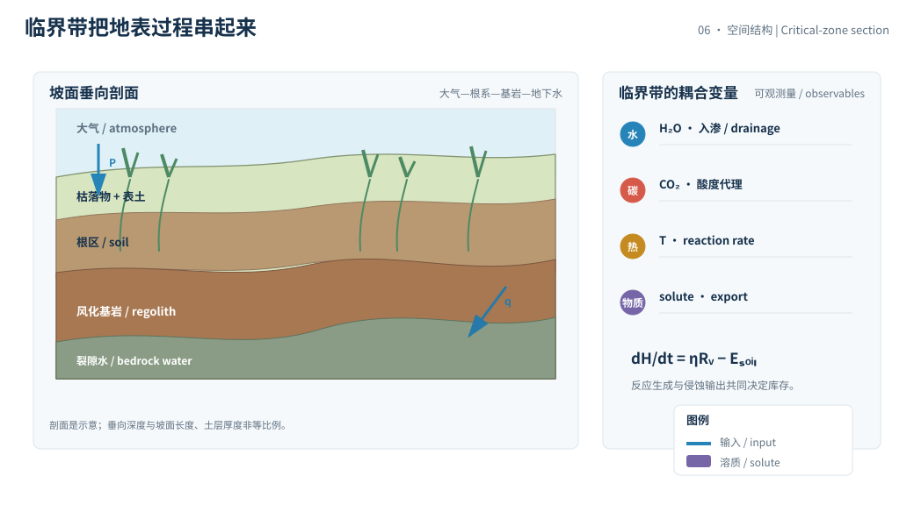
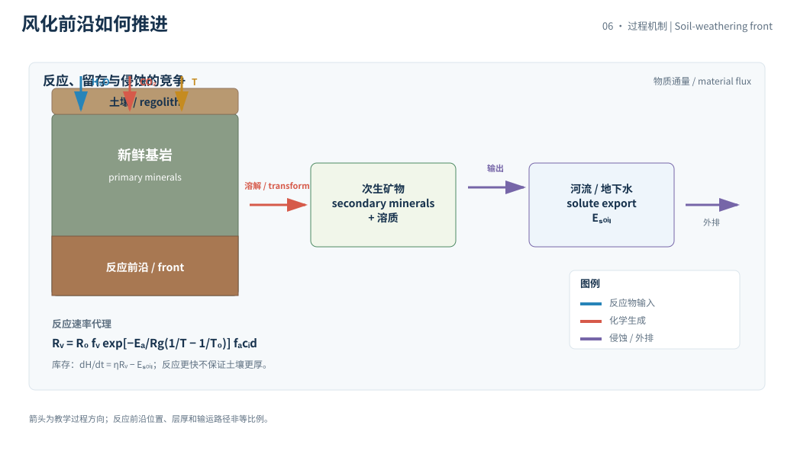

本页目录
地表 I · 风化、土壤与临界带
一块岩石变成土壤，不是“下雨加热就变松”这么简单。水把反应物带到孔隙，温度改变反应速率，酸碱度改变矿物稳定性，而侵蚀又把新生成的物质搬走。临界带是这些过程在根系、土壤、风化层和地下水之间相遇的界面。
学习层：风化得快，土壤就一定变厚吗
1. 具体情境：坡面上的新鲜岩石与薄土层
在一块有植被的坡面上，基岩持续暴露。雨水沿裂隙进入，二氧化碳和有机酸让孔隙水具有反应性；矿物被溶解或转化，部分物质留下形成风化层，另一部分随坡面径流和地下水输出。管理者想知道：增加有效水分或升高温度，会让土壤库存怎样变化？
实验数字是教学设定，单位为等效岩石厚度和年；它不是某个土壤剖面的实测速率。真实风化速率依赖矿物、粒径、排水、根系、微生物、二氧化碳来源和侵蚀历史。
2. 揭示前预测：反应速率和土壤库存不是同一个量
先预测四件事：
- 在本实验的 Arrhenius 代理中，温度升高会使化学风化速率增加还是减少？
- 有效水分从很低增加时，风化速率会一直线性增加，还是会出现“供水不再是唯一限制”的平台？
- 风化生成速率增加时，若侵蚀更快，土壤净库存可能增加还是减少？
- 仅凭土壤厚度，能否反推出过去一年的化学风化通量？
提交预测后，实验分别显示化学生成、保留和侵蚀三个账本项；这能避免把“反应快”直接说成“库存变大”。
3. 公式桥：速率因子与临界带库存
用一个透明的教学代理表示化学风化速率：
其中 \(R_0\) 是参考温度 \(T_0\) 下的基准速率，\(f_w\) 是有效水分因子，\(E_a\) 是表观活化能，\(R_g\) 是气体常数，\(f_{\mathrm{acid}}\) 是酸碱度的简化因子。温度必须用 K，不能把摄氏温度直接放进指数。
本实验把水分限制在 \(0\) 到 \(1\) 之间，把过量供水后的增益截平；这是“反应物供应”的代理，不是降水量本身。土壤厚度或风化层库存可写成
其中 \(\eta\) 是风化产物留存比例，\(E_{\mathrm{soil}}\) 是侵蚀输出速率。即使 \(R_{\mathrm{w}}\) 变大，只要 \(E_{\mathrm{soil}}\) 增长得更快，\(H\) 仍会变薄。
数量级上，化学反应可以在小时到年内发生，成熟土壤和风化层的形成与搬运常跨越年到千年；基岩抬升、剥蚀和景观更新又可进入更长的地质尺度。不同时间尺度不能用一个年平均值强行拼接。
4. 互动实验：让岩石、土壤和输出一起结算
无 JavaScript 时的静态 fallback：教学设定为温度 \(15\) °C、有效水分因子 \(f_w=0.65\)、酸碱度代理 pH \(=5.5\)、侵蚀输出 \(E_{\mathrm{soil}}=0.08\) mm/yr、观察 \(100\) 年。取 \(R_0=0.25\) mm/yr、\(\eta=0.70\)，代理计算得化学风化约 \(0.177\) mm/yr，保留输入约 \(0.124\) mm/yr，侵蚀损失 \(8.0\) mm，土壤净变化约 \(+4.4\) mm。
| 账本项 | 默认结果 | 单位 / 解释 |
|---|---|---|
| 温度 \(T\) | 15.0 | °C，内部换算为 K |
| 有效水分 \(f_w\) | 0.650 | 无量纲，平台化代理 |
| 酸碱度 pH | 5.5 | 教学酸度输入，不等于溶液全化学 |
| 化学风化 \(R_{\mathrm{w}}\) | 0.177 | mm/yr，反应速率代理 |
| 留存输入 \(\eta R_{\mathrm{w}}\) | 0.124 | mm/yr，进入土壤库存 |
| 侵蚀输出 | 0.080 | mm/yr |
| 100 年净变化 | +4.4 | mm，库存增量代理 |
所有数字是教学计算；真实站点数据须给采样深度、测量窗口、基准和核验日期。
5. 边界：风化、成土和侵蚀必须分开
- 化学与物理风化不同：冻融、盐结晶、热胀冷缩和根系劈裂能制造新表面积，却不一定等价于元素溶解通量。
- 温度效应受水限制：升温可提高反应速率，但蒸散增强、干燥、冻结或排水变化可能降低有效水分；“暖就一定风化快”越过了模型边界。
- pH 只是代理：配体、氧化还原状态、离子强度和矿物表面会共同控制溶解；一个 pH 滑块不是完整溶液化学。
- 土壤库存有搬运项：坡度、植被、暴雨和土地利用影响侵蚀与沉积。厚土可以是本地生成，也可以是上游搬来的。
因此，土壤厚度、溶质通量、矿物蚀变和碳储量要分别测量或建模，不能互相替代。
6. 迁移：从临界带到气候和生态反馈
硅酸盐风化可消耗大气二氧化碳并改变河流溶质，土壤又存储有机碳、调节入渗并支撑植被。把它放进气候模型时，必须区分即时反应、土壤停留、河流输出和长期碳酸盐埋藏的时间尺度。
迁移题：若升温使 \(R_{\mathrm{w}}\) 增加，但土壤库存下降，哪一项输出可能同步增大？若把有效水分改成季节脉冲，年平均因子为什么可能丢掉“干湿交替”带来的非线性？你还需要观测哪一种溶质或同位素来判断物理剥蚀与化学溶解的贡献？


1. 临界带的垂向剖面
从冠层、枯落物到表土、根区、风化基岩和裂隙水，临界带把大气输入、生态过程、矿物反应和地下水流动接在一起。边界通常不是一条平面；不同坡位、岩性和排水条件可以有不同深度与年龄结构。
2. 表面积和反应前沿
破碎会增加表面积，黏土和氧化物表面提供吸附位点，水的停留时间决定溶质是否有机会继续反应。风化前沿可能向基岩下移，也可能被侵蚀抬升；“速率”必须说明是厚度前进、元素释放，还是矿物转化的速率。
3. 证据纪律
土壤与风化研究常结合剖面采样、孔隙水、河流溶质、遥感、气象和年代示踪。若引用降水、温度或土壤碳等动态指标，必须标年份或时间窗、参考基准、不确定度和核验日期。USGS 的水文与地质资料、NOAA 的气象水文资料、NASA 的陆面观测和 IPCC 的综合评估可作为优先入口。
4. 反应式背后的变量
Arrhenius 项只表示温度对一个表观反应速率的影响。\(R_0\)、\(E_a\) 和酸度因子都可能随矿物组合、微生物和反应阶段改变；同一个坡面上，裂隙内水和地表薄膜水也不一定共享同一温度和停留时间。
真正的观测设计应同时采集固体、溶液和输出端：固体告诉我们哪些矿物消失或生成，孔隙水告诉我们溶质浓度和酸碱度，河流输出告诉我们净效应。三者不一致时，差异本身可能是隐藏储库或时间滞后的证据。
4. 观测设计：把过程拆成三个账本
第一本账记固体矿物和颗粒尺度的反应界面。
第二本账记孔隙水、地下水和河水中的溶质浓度。
第三本账记坡面侵蚀、沉积和颗粒输出的质量通量。
三本账必须共享采样位置、时间窗和单位，否则“生成速率”和“出口通量”没有可比性。
剖面厚度可以估计库存，却不能单独告诉我们库存的年龄分布。
溶质浓度可以很高，但若流量很小，元素通量未必很大。
颗粒输出可能携带未反应的新鲜矿物，也可能携带已经富集的黏土和氧化物。
因此，风化反应、土壤保留和流域输出应分别建模，再用守恒式连接。
5. 小结
风化账本要至少分成反应输入、留存库存和输出损失三项；温度、水分、酸碱度和侵蚀只是不同层次的控制量。下一章把水从坡面送进河流与含水层：如何在流域尺度保持水量守恒，并判断地下水是在补给还是亏空？